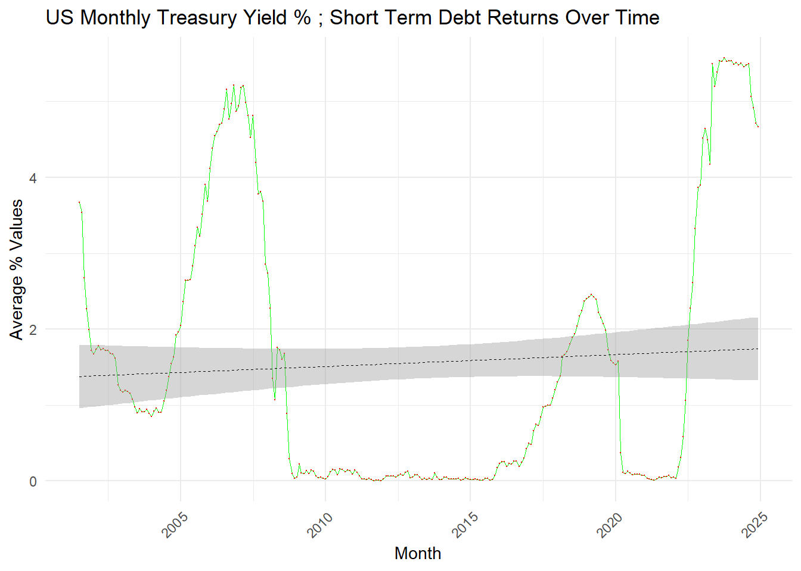

library(tidyverse)
library(httr2)
# FRED OBSERVATIONS DATA - INFLATION
# Parameters and request
fred_url <- "https://api.stlouisfed.org/fred/series/observations"
fred_params <- list(
series_id = "CPIAUCSL", # Series ID = consumer price index for urban consumers/ Inflation data
api_key = fred_api_key, # API key
file_type = "json", # Specify response format as JSON
start_date = "2000-01-01", # Optional start date for data
end_date = "2020-01-01" # Optional end date for data
)
# Send the GET request for series information
fred_response <- request(fred_url) |>
req_url_query(!!!fred_params) |> # Pass query parameters
req_perform()
fred_data <- resp_body_json(fred_response)
# Extract the observations data from the response
observations <- fred_data$observations
# Convert it to a data frame for easier analysis
observations_df <- data.frame(
date = sapply(observations, function(x) x$date),
value = sapply(observations, function(x) x$value)
)
# FRED OBSERVATIONS DATA - IR14270 (if available, for international stock market data), values are lin= actual price/actual value
# Parameters and request
fred_url <- "https://api.stlouisfed.org/fred/series/observations"
fred_int_params <- list(
series_id = "IR14270", # Series ID = International stock market
api_key = fred_api_key, # API key
file_type = "json", # Specify response format as JSON
start_date = "2000-01-01", # Optional start date for data
end_date = "2020-01-01" # Optional end date for data
)
# Send the GET request for series information
fred_int_response <- request(fred_url) |>
req_url_query(!!!fred_int_params) |> # Pass query parameters
req_perform()
fred_int_data <- resp_body_json(fred_int_response)
# Extract the observations data from the response
observations_int <- fred_int_data$observations
# Convert it to a data frame for easier analysis
observations_int_df <- data.frame(
date = sapply(observations_int, function(x) x$date),
value = sapply(observations_int, function(x) x$value)
)
####### SHORT TERM DEBT RETURS [STDR] - USE MONTHLY TREASURY YIELDS with units= lin[percentage]
# Parameters and request
fred_url <- "https://api.stlouisfed.org/fred/series/observations"
fred_stdr_params <- list(
series_id = "DGS1MO", # Series ID = Treasury Yiields
api_key = fred_api_key, # API key
file_type = "json", # Specify response format as JSON
start_date = "2000-01-01", # Optional start date for data
end_date = "2020-01-01" # Optional end date for data
)
# Send the GET request for series information
fred_stdr_response <- request(fred_url) |>
req_url_query(!!!fred_stdr_params) |> # Pass query parameters
req_perform()
fred_stdr_data <- resp_body_json(fred_stdr_response)
# Extract the observations data from the response
observations_stdr <- fred_stdr_data$observations
# Convert it to a data frame for easier analysis
observations_stdr_df <- data.frame(
date = sapply(observations_stdr, function(x) x$date),
value = sapply(observations_stdr, function(x) x$value)
)mp04
Project 4 : Monte Carlo-Informed Selection of CUNY Retirement Plans
by Maria Jerez
![]()
GREAT NEWS! I just got hired at Baruch college for the position as an ESOL professor. I’m at a difficult point, where I must choose one of two retirement plans offered : TRS & ORP. TRS is a pension plan, and ORP is like a 401K. To help me with my decision I will be analyzing a few metrics and sets of data, see below. Dive in and help me on this hard decision. I’ll take you through my analysis process and decision.
Data sources:
Federal Reserve Bank of Saint Louis : US Economic data API
Metrics:
- CPI as Inflation Data
- International Stock market as International Equity Market total returns data
- US Monthly Treasury Yields as Short Term Debt Returns
Alpha Vantage : free financial market data API
Metrics:
- S&P 500 as US equity data
- 10 Treasury Yield as Bond Market total returns data
- Real GDP as Wage Growth data
I’ve requested a set of keys from the sources in order to extract data from it’s APIs. After completing these tasks, I then extracted and created data frames for the metrics above and analyzed each. See code below for code of extraction.
My keys:
CLICK TO VIEW CODE FOR EXTRACTING AND CREATING DATA FRAME FOR ALPHA DATA
</summary>
``` r
```
CLICK TO VIEW CODE FOR EXTRACTING AND CREATING DATA FRAME FOR ALPHA DATA
```r
library(tidyverse)
library(httr2)
#ALPHAVANTAGE DATA - US EQUITY
req <- request("https://www.alphavantage.co/query") |>
req_url_query(`function` = "TIME_SERIES_MONTHLY",
symbol = "SPY", #s%p 500, US equity data
apikey = API_KEY) |>
req_perform()
#JSON response
sp_data <- resp_body_json(req)
# Extract the time series data (the 'Time Series (Monthly)' part)
sp_time_series <- sp_data[["Monthly Time Series"]]
# Convert it into a data frame
sp_time_series_df <- data.frame(
date = as.Date(names(sp_time_series)), # Convert dates to Date class
open = sapply(sp_time_series, function(x) as.numeric(x[["1. open"]])),
high = sapply(sp_time_series, function(x) as.numeric(x[["2. high"]])),
low = sapply(sp_time_series, function(x) as.numeric(x[["3. low"]])),
close = sapply(sp_time_series, function(x) as.numeric(x[["4. close"]])),
volume = sapply(sp_time_series, function(x) as.numeric(x[["5. volume"]])),
stringsAsFactors = FALSE # Avoid factors
)
#### ALPHAVANTAGE DATA - 10 YEAR TREASURY BOND YIELD in percent
bond_req <- request("https://www.alphavantage.co/query") |>
req_url_query(`function` = "TREASURY_YIELD",
interval = "monthly",
apikey = API_KEY) |>
req_perform()
#JSON response
bond_data <- resp_body_json(bond_req)
# Extract and process the bond data
bond_df_data <- bond_data$data
# Extract 'date' and 'value' from bond_df_data
dates <- sapply(bond_df_data, function(x) x$date) # Extract 'date'
values <- sapply(bond_df_data, function(x) as.numeric(x$value)) # Extract 'value' and convert to numeric
# Create the data frame
bond_df <- data.frame(
date = as.Date(dates), # Convert 'date' to Date class
value = values, # Numeric 'value'
stringsAsFactors = FALSE # Avoid factors
)
### REAL GDP, as GDP INCREASES SO DOES WAGE GROWTH in Billions of dollars
#https://www.alphavantage.co/query?function=REAL_GDP&interval=annual&apikey=demo
gdp_req <- request("https://www.alphavantage.co/query") |>
req_url_query(`function` = "REAL_GDP",
interval = "annual",
apikey = API_KEY) |>
req_perform()
#JSON response
gdp_data <- resp_body_json(gdp_req)
# Extract and process the bond data
gdp_df_data <- gdp_data$data
# Extract 'date' and 'value' from bond_df_data
dates <- sapply(gdp_df_data, function(x) x$date) # Extract 'date'
values <- sapply(gdp_df_data, function(x) as.numeric(x$value)) # Extract 'value' and convert to numeric
# Create the data frame
gdp_df <- data.frame(
date = as.Date(dates), # Convert 'date' to Date class
value = values, # Numeric 'value'
stringsAsFactors = FALSE # Avoid factors
)```
Economy Analysis
I will now dive into my initial economic analysis based on the metrics described at the beginning. I’m looking for trends that stand out. Here are some findings I came across and graphs to help us better understand.
S&P 500 as US equity data
CLICK TO VIEW CODE FOR GRAPH S&P500_US EQUITY - Monthly Average High and Low Values
```r
req <- request("https://www.alphavantage.co/query") |>
req_url_query(`function` = "TIME_SERIES_MONTHLY",
symbol = "SPY", #s%p 500, US equity data
apikey = API_KEY) |>
req_perform()
#JSON response
data <- resp_body_json(req)
#Inspect the structure of the data
str(data)
# Extract the time series data (the 'Time Series (Monthly)' part)
time_series <- data[["Monthly Time Series"]]
# Convert it into a data frame
time_series_df <- data.frame(
date = as.Date(names(time_series)), # Convert dates to Date class
open = sapply(time_series, function(x) as.numeric(x[["1. open"]])),
high = sapply(time_series, function(x) as.numeric(x[["2. high"]])),
low = sapply(time_series, function(x) as.numeric(x[["3. low"]])),
close = sapply(time_series, function(x) as.numeric(x[["4. close"]])),
volume = sapply(time_series, function(x) as.numeric(x[["5. volume"]])),
stringsAsFactors = FALSE # Avoid factors
)
# View the first few rows of the data
str(time_series_df)
# Group by month (and possibly year if you want to avoid year-based aggregation)
monthly_avg_df <- time_series_df |>
mutate(month = floor_date(date, "month")) |> # Round the date to the start of the month
group_by(month) |> # Group by month
summarise(
avg_open = mean(open, na.rm = TRUE),
avg_high = mean(high, na.rm = TRUE),
avg_low = mean(low, na.rm = TRUE),
avg_close = mean(close, na.rm = TRUE),
avg_volume = mean(volume, na.rm = TRUE)
)
# View the first few rows of the monthly averages
head(monthly_avg_df)
# Reshape the data to long format for ggplot
monthly_avg_high_low <- monthly_avg_df |>
select(month, avg_high, avg_low) |>
gather(key = "metric", value = "value", -month)
glimpse(monthly_avg_high_low)
# Plot the monthly high and low averages over time
ssplot <- ggplot(monthly_avg_high_low, aes(x = month, y = value, color = metric)) +
geom_line(size = .10) + # Line plot for high and low values
geom_point(size = .25) + # Points to mark data points
geom_smooth(method = "lm", color = "black", linetype = "dashed", size = .05) +
labs(
title = "S&P500_US EQUITY - Monthly Average High and Low Values",
x = "Month",
y = "Average $ Value ",
color = "Metric"
) +
theme_minimal() +
theme(axis.text.x = element_text(angle = 45, hjust = 1))```

I am using the S&P 500 to portray US Equity. The S&P 500 index reflects the 500 largest publicly traded companies in the US., spanning from industries such as healthcare, finance, consumer goods, and energy. I can conclude that the better the S&P performs the better it reflects US equity. In other words an upward trend = growth, downward trend = difficulties.
From this graph, in a spam of 20+ years, we have a healthy upward trend, we have growth. However, zooming into chunks of years, particularly in recent years there seems to be a steeper spike upwards, perhaps too healthy a market. As we also see from the graph, after a spike comes a drop. For example zooming into years 2007-2008sh, a spike happened around 2007 when suddenly dropped in 2008. Of course we must consider historical events, in 2008 the stock market crashed due to a housing bubble. As another example, we see another big slope up and then down from 2020-2021, the historical event for this was Covid-19.
To conclude on this graph, US equity looks fantastico in a longer time span and bad on a short time span. But increasing either way.
10 Treasury Yield as Bond Market total returns data
CLICK TO VIEW CODE FOR GRAPH 10 Year Treasury Bond Yield; Bond Market Returns - Monthly Average % values
```r
bond_req <- request("https://www.alphavantage.co/query") |>
req_url_query(`function` = "TREASURY_YIELD",
interval = "monthly",
apikey = API_KEY) |>
req_perform()
#JSON response
bond_data <- resp_body_json(bond_req)
# Extract and process the bond data
bond_df_data <- bond_data$data
# Extract 'date' and 'value' from bond_df_data
dates <- sapply(bond_df_data, function(x) x$date) # Extract 'date'
values <- sapply(bond_df_data, function(x) as.numeric(x$value)) # Extract 'value' and convert to numeric
# Create the data frame
bond_df <- data.frame(
date = as.Date(dates), # Convert 'date' to Date class
value = values, # Numeric 'value'
stringsAsFactors = FALSE # Avoid factors
)
# Group by month (and possibly year if you want to avoid year-based aggregation)
monthly_bondavg_df <- bond_df |>
mutate(month = floor_date(date, "month")) |> # Round the date to the start of the month
group_by(month) |> # Group by month
summarise(
avg_value = mean(value, na.rm = TRUE)
)
# Reshape the data to long format for ggplot
monthly_bondavg_plotdata <- monthly_bondavg_df |>
select(month, avg_value) |>
gather(key = "metric", value = "value", -month)
# Plot the monthly high and low averages over time
tenyear_plot <- ggplot(monthly_bondavg_plotdata, aes(x = month, y = value, color = metric)) +
geom_line(size = .10) + # Line plot for high and low values
geom_point(size = .25) + # Points to mark data points
labs(
title = "10 Year Treasury Bond Yield; Bond Market Returns - Monthly Average % values",
x = "Month",
y = "Average % Value ",
color = "Metric"
) +
theme_minimal() +
theme(axis.text.x = element_text(angle = 45, hjust = 1))```

For this graph I have the 10 year Treasury Bond reflecting Bond Market returns over time. The 10 year Treasury Bond Yield is the percent interest paid by government for borrowed money for 10 years. The higher the % interest the more money payed back to investors/lenders the better. As it is government backed, it is considered a safe investment.
From the graph we also see % rates rise up until 1980s and then fall. Rising rate means confidence in the economy, higher bond prices, higher returns. Falling rates mean low confidence in the economy, lower bond prices, lower returns.
Quick note: The 1980’s represent an era of consumerism and materialism, as well as the birth of MTV! In the 1990s the internet takes the house.
So it looks like confidence for investors is growing from 2020 on, perhaps from higher returns from this bond investment. If history repeats itself and should the 10 year treasury bond reach a 10%+ yield such as that of the 1980s, than it may just be a good time to invest in this bond and wait till it reaches peak……or not? Caution and further research must be done.
Real GDP as Wage Growth data
CLICK TO VIEW CODE FOR GRAPH Real GDP; Wage Growth - Monthly Average Billion $s
```r
gdp_req <- request("https://www.alphavantage.co/query") |>
req_url_query(`function` = "REAL_GDP",
interval = "annual",
apikey = API_KEY) |>
req_perform()
#JSON response
gdp_data <- resp_body_json(gdp_req)
# Extract and process the bond data
gdp_df_data <- gdp_data$data
# Extract 'date' and 'value' from bond_df_data
dates <- sapply(gdp_df_data, function(x) x$date) # Extract 'date'
values <- sapply(gdp_df_data, function(x) as.numeric(x$value)) # Extract 'value' and convert to numeric
# Create the data frame
gdp_df <- data.frame(
date = as.Date(dates), # Convert 'date' to Date class
value = values, # Numeric 'value'
stringsAsFactors = FALSE # Avoid factors
)
# Group by month (and possibly year if you want to avoid year-based aggregation)
monthly_gdpavg_df <- gdp_df |>
mutate(month = floor_date(date, "month")) |> # Round the date to the start of the month
group_by(month) |> # Group by month
summarise(
avg_value = mean(value, na.rm = TRUE)
)
# Reshape the data to long format for ggplot
monthly_gdpavg_plotdata <- monthly_gdpavg_df |>
select(month, avg_value) |>
gather(key = "metric", value = "value", -month)
# Plot the monthly high and low averages over time
realgdp_plot <- ggplot(monthly_gdpavg_plotdata, aes(x = month, y = value, color = metric)) +
geom_line(size = .10) + # Line plot for high and low values
geom_point(size = .25) + # Points to mark data points
geom_smooth(method = "lm", color = "black", linetype = "dashed", size = .2) +
labs(
title = "Real GDP; Wage Growth - Monthly Average Billion $",
x = "Month",
y = "Average Billion $ ",
color = "Metric"
) +
theme_minimal() +
theme(axis.text.x = element_text(angle = 45, hjust = 1))```
For this graph I use Real GDP as an indicator of Wage Growth. Real GDP is another indicator of the economy health, it measures the values of goods and services produced in a period of time. One conclusion I’ve made is that a rise in goods and services is a result of a rise in demand for goods, if effect then is a rise in labor to meet demand,and hence a rise in wages to fill labor gaps = wage growth.
So, I can safely say that because Real GDP has been rising , wages will also continue to rise. This also confirms that my wage will continue to increase over time, more money in my bag, more money to save! But how true is that? I must find a way to maintain the same expenses until I retire, frugality is key….maybe just maybe in order to preserve this trend and bag more cash in my pocket I will cut on some proteins and carbs when prices of goods rise. No more Turkey for me.
CPI as Inflation Data
CLICK TO VIEW CODE FOR GRAPH - Monthly CPI (Consumer Price Index) Over Time as INFLATION
```r
# Parameters and request
fred_url <- "https://api.stlouisfed.org/fred/series/observations"
fred_params <- list(
series_id = "CPIAUCSL", # Series ID = consumer price index for urban consumers/ Inflation data
api_key = fred_api_key, # API key
file_type = "json", # Specify response format as JSON
start_date = "2000-01-01", # Optional start date for data
end_date = "2020-01-01" # Optional end date for data
)
# Send the GET request for series information
fred_response <- request(fred_url) |>
req_url_query(!!!fred_params) |> # Pass query parameters
req_perform()
fred_data <- resp_body_json(fred_response)
# Extract the observations data from the response
observations <- fred_data$observations
# Convert it to a data frame for easier analysis
observations_df <- data.frame(
date = sapply(observations, function(x) x$date),
value = sapply(observations, function(x) x$value)
)
observations_df$date <- as.Date(observations_df$date, format = "%Y-%m-%d") # convert date chr to date
# Downsample to monthly data by grouping and summarizing
# We can summarize by taking the average for each month (or any other summary statistic)
monthly_data <- observations_df |>
mutate(month = floor_date(date, "month")) |> # Round the date down to the start of the month
group_by(month) |> # Group by the rounded month
summarise(monthly_value = mean(as.numeric(value), na.rm = TRUE)) # Summarize the values (e.g., average)
# Plot the monthly data using ggplot2 with a trend line
cpi_plot <- ggplot(monthly_data, aes(x = month, y = monthly_value)) +
geom_line(color = "blue", size = .5) + # Line plot
geom_point(color = "red", size = .05) + # Points on the line
geom_smooth(method = "lm", color = "black", linetype = "dashed", size = .25) + # Add a linear trend line
labs(title = "Monthly CPI (Consumer Price Index) Over Time: INFLATION",
x = "Month",
y = "Average CPI Value") +
theme_minimal() +
theme(axis.text.x = element_text(angle = 45, hjust = 1)) # Rotate x-axis labels for better readability```
For this graph I use CPI[Consumer price index] to evaluate inflation. Or should I call it Inflammation…because boy does this hurt, especially when it rises quickly such as what we have seen happen sometime after 2020. There goes my frugality from wage growth savings. Back to analysis. CPI is a measure of prices paid by consumers for services and goods. Hence the rise reflects the rise in expenses, the consumer is paying more for goods and services. I am paying more for rice with chicken!!
To conclude here, inflation will kill my savings. Perhaps if it falls below the trend line I’m relatively safe?…..
International Stock market as International Equity Market total returns data
CLICK TO VIEW CODE FOR GRAPH - Monthly International Stock Market Avg. Value Over Time
```r
# Parameters and request
fred_url <- "https://api.stlouisfed.org/fred/series/observations"
fred_int_params <- list(
series_id = "IR14270", # Series ID = International stock market
api_key = fred_api_key, # API key
file_type = "json", # Specify response format as JSON
start_date = "2000-01-01", # Optional start date for data
end_date = "2020-01-01" # Optional end date for data
)
# Send the GET request for series information
fred_int_response <- request(fred_url) |>
req_url_query(!!!fred_int_params) |> # Pass query parameters
req_perform()
fred_int_data <- resp_body_json(fred_int_response)
# Extract the observations data from the response
observations_int <- fred_int_data$observations
# Convert it to a data frame for easier analysis
observations_int_df <- data.frame(
date = sapply(observations_int, function(x) x$date),
value = sapply(observations_int, function(x) x$value)
)
observations_int_df$date <- as.Date(observations_int_df$date, format = "%Y-%m-%d") # convert date chr to date
# Downsample to monthly data by grouping and summarizing
# We can summarize by taking the average for each month (or any other summary statistic)
monthly_int_data <- observations_int_df |>
mutate(month = floor_date(date, "month")) |> # Round the date down to the start of the month
group_by(month) |> # Group by the rounded month
summarise(monthly_value = mean(as.numeric(value), na.rm = TRUE)) # Summarize the values (e.g., average)
# Plot the monthly data using ggplot2 with a trend line
internationalstock_plot <- ggplot(monthly_int_data, aes(x = month, y = monthly_value)) +
geom_line(color = "green", size = .2) + # Line plot
geom_point(color = "red", size = .1) + # Points on the line
geom_smooth(method = "lm", color = "black", linetype = "dashed", size = .025) + # Add a linear trend line
labs(title = "Monthly International Stock Market Avg. Value Over Time",
x = "Month",
y = "Average $ Value") +
theme_minimal() +
theme(axis.text.x = element_text(angle = 45, hjust = 1)) # Rotate x-axis labels for better readability```
For this graph I look at International stock market data for International Equity analysis. The international stock market measure stocks that are international to the investors country of investment. In contrast to S&P 500 that measures US only equities.
From the graph, the overall trend is rising, we do see time periods for grater equity; peaks; rises , such as those in 2010-2012sh and most recently 2023-2024sh.
I will conclude that investing in international markets will diversify my investments and potentially level up any losses [if any] had by investing on S&P.
US Monthly Treasury Yields as Short Term Debt Returns
CLICK TO VIEW CODE FOR GRAPH - US Monthly Treasury Yield % ; Short Term Debt Returns Over Time
```r
# Parameters and request
fred_url <- "https://api.stlouisfed.org/fred/series/observations"
fred_stdr_params <- list(
series_id = "DGS1MO", # Series ID = Treasury Yields
api_key = fred_api_key, # API key
file_type = "json", # Specify response format as JSON
start_date = "2000-01-01", # Optional start date for data
end_date = "2020-01-01" # Optional end date for data
)
# Send the GET request for series information
fred_stdr_response <- request(fred_url) |>
req_url_query(!!!fred_stdr_params) |> # Pass query parameters
req_perform()
fred_stdr_data <- resp_body_json(fred_stdr_response)
# Extract the observations data from the response
observations_stdr <- fred_stdr_data$observations
# Convert it to a data frame for easier analysis
observations_stdr_df <- data.frame(
date = sapply(observations_stdr, function(x) x$date),
value = sapply(observations_stdr, function(x) x$value)
)
observations_stdr_df$date <- as.Date(observations_stdr_df$date, format = "%Y-%m-%d") # convert date chr to date
# Downsample to monthly data by grouping and summarizing
# We can summarize by taking the average for each month (or any other summary statistic)
monthly_stdr_data <- observations_stdr_df |>
mutate(month = floor_date(date, "month")) |> # Round the date down to the start of the month
group_by(month) |> # Group by the rounded month
summarise(monthly_value = mean(as.numeric(value), na.rm = TRUE)) # Summarize the values (e.g., average)
# Plot the monthly data using ggplot2 with a trend line
monthly_treasuryyield <- ggplot(monthly_stdr_data, aes(x = month, y = monthly_value)) +
geom_line(color = "green", size = .2) + # Line plot
geom_point(color = "red", size = .1) + # Points on the line
geom_smooth(method = "lm", color = "black", linetype = "dashed", size = .05) + # Add a linear trend line
labs(title = "US Monthly Treasury Yield % ; Short Term Debt Returns Over Time",
x = "Month",
y = "Average % Values") +
theme_minimal() +
theme(axis.text.x = element_text(angle = 45, hjust = 1)) # Rotate x-axis labels for better readability```

From this graph I can conclude that this is like a heart beat EKG under stress. I am analyzing the US monthly treasury yield to view any short term debt return trends. The US monthly Treasury yield is like the 10 year yield, interest payed by government for borrowed money, but monthly. Again, it’s an indicator of economy health in a short term.
As % yields rise, so does short term debt returns. Meaning, more short term debts are payed-off/ returned with higher % rates. As % yields fall, so does short term debt returns. That makes sense, government wants to pay off higher rate loans, a money loss for them. However it looks like, from the graph, in a time period between 2007-2017sh, yields are relatively low and stagnant. The same happens sometime between 2020-2022. Is it stress? less borrowing?
In terms of favoring my retirement, maybe investing/ lending when rates are increasing will be a plus. I will be collecting greater interest, lets hope this is the trend when it’s time for me to retire.
Monthly retirement returns from TRS & ORP
TRS
After Economy analysis I will now calculate monthly Benefits for the TRS plan and potential monthly benefits for ORP.
I’ll First calculate TRS. I will keep in mind that TRS benefit is a pension benefit. When it’s time for me to retire I will receive a check at/near monthly equal amounts for the remainder of my life [till death.] The downside of this is that once it’s time for me to retire, and should markets perform higher hence provide higher returns, I will not reap those benefits. It’s one stable check market win or loose.
CLICK TO VIEW CODE
```r
calculate_benefit <- function(FAS, N, CPI) {
# Step 1: Calculate base benefit
if (N <= 20) {
base_benefit <- 1.67 / 100 * FAS * N
} else if (N == 20) {
base_benefit <- 1.75 / 100 * FAS * N
} else {
base_benefit <- (35 / 100 + 2 / 100 * (N - 20)) * FAS
}
# Step 2: Calculate inflation adjustment
inflation_adjustment <- 0.5 * CPI
inflation_adjustment <- ceiling(inflation_adjustment * 10) / 10 # Round up to nearest tenth
# Cap inflation adjustment between 1% and 3%
if (inflation_adjustment < 1) {
inflation_adjustment <- 1
} else if (inflation_adjustment > 3) {
inflation_adjustment <- 3
}
# Step 3: Apply inflation adjustment to base benefit
adjusted_benefit <- base_benefit * (1 + inflation_adjustment / 100)
# Return the adjusted benefit
return(adjusted_benefit)
}```
# Example:
FAS <- 90000 # Example Final Average Salary
N <- 20 # Example number of years served
CPI <- 300 # Example CPI For this example TRS benefit I used 90k as my final average salary. I can adjust accordingly on my R code. Here are my monthly Benefits for the TRS plan based on these metrics.
[1] 2580.15ORP
I will now explore ORP monthly benefits. The ORP benefit is like a 401k, so if markets are performing well in my retirement then I potentially have greater monthly benefits or maybe longer benefits. I must keep in mind this is not forever [till death], so it’s important to invest well as well as to be cognizant of how much I will extract yearly for whatever number of years I think I will continue to live after retirement. So I guess one of the bigger downside is this plan will keep me alert on the number of years I will be alive - jaja. I also have a risk of markets not performing well. Unless of course I’m an excellent money manager and investor. In any case let’s look at the numbers. Here are my monthly benefits :
CLICK TO VIEW CODE
```r
#CALCULATING ORP BENEFIT
# Define the function to calculate total savings
calculate_orp_savings <- function(initial_salary, salary_increase_rate, years_at_cuny, starting_age) {
# Define the asset allocation and average returns for each period
asset_allocation <- list(
age_25_49 = c(US_Equities = 0.54, International_Equities = 0.36, Bonds = 0.10),
age_50_59 = c(US_Equities = 0.47, International_Equities = 0.32, Bonds = 0.21),
age_60_74 = c(US_Equities = 0.34, International_Equities = 0.23, Bonds = 0.43),
age_75_plus = c(US_Equities = 0.19, International_Equities = 0.13, Bonds = 0.62, Short_Term_Debt = 0.06)
)
returns <- c(US_Equities = 0.07, International_Equities = 0.06, Bonds = 0.04, Short_Term_Debt = 0.02)
# Function to compute contributions
calc_contributions <- function(salary, years) {
contributions <- numeric(years)
for (year in 1:years) {
if (salary <= 45000) {
employee_contrib <- 0.03 * salary
} else if (salary <= 55000) {
employee_contrib <- 0.035 * salary
} else if (salary <= 75000) {
employee_contrib <- 0.045 * salary
} else if (salary <= 100000) {
employee_contrib <- 0.0575 * salary
} else {
employee_contrib <- 0.06 * salary
}
if (year <= 7) {
employer_contrib <- 0.08 * salary
} else {
employer_contrib <- 0.10 * salary
}
total_contrib <- employee_contrib + employer_contrib
contributions[year] <- total_contrib
salary <- salary * (1 + salary_increase_rate) # Salary increases yearly
}
return(contributions)
}
# Calculate contributions for all years
contributions <- calc_contributions(initial_salary, years_at_cuny)
# Calculate asset growth by age range
total_savings <- 0
current_age <- starting_age
for (year in 1:years_at_cuny) {
# Determine the asset allocation based on age
if (current_age >= 75) {
allocation <- asset_allocation$age_75_plus
} else if (current_age >= 60) {
allocation <- asset_allocation$age_60_74
} else if (current_age >= 50) {
allocation <- asset_allocation$age_50_59
} else {
allocation <- asset_allocation$age_25_49
}
# Calculate the return for this year
growth_rate <- sum(allocation * returns)
total_savings <- total_savings * (1 + growth_rate) + contributions[year]
# Increase the age by 1 year
current_age <- current_age + 1
}
return(total_savings)
}```
For this ORP benefit example I am assuming the below scenario. I’m am also calculating 20 years of retirement
# Example:
initial_salary <- 65000
salary_increase_rate <- 0.03 # 3% annual increase in salary
years_at_cuny <- 20 # Employee works 20 years at CUNY
starting_age <- 25
#NOTE: 20 years monthly benefits after retirement#[1] 2110.913With both Calculations there are a ton of things to keep in mind. For TRS I’m assuming a 90K AVG salary at end of my tenure. It could be more or less. For ORP, I am assuming a 65K starting salary with monthly increase rate at 3%, but we must also consider market performance. Also could be more or less. So these numbers are just estimates.
MONTE CARLO ANALYSIS
So I want to have more confidence of my future returns. I will now apply the Monte Carlo analysis to my calculations. Here are my results:
TRS
CLICK TO VIEW CODE
```r
### APPLY MONTE CARLO TO TRS
### # Load necessary library
library(MASS) # For simulating random variables (like FAS and CPI)
# Function to calculate the retirement benefit with Monte Carlo Analysis
monte_carlo_benefit_trs <- function(initial_FAS, mean_CPI, sd_CPI, mean_years_served, sd_years_served, num_simulations = 200) {
# Function to calculate the benefit
calculate_benefit_trs <- function(FAS, N, CPI) {
# Step 1: Calculate base benefit
if (N <= 20) {
base_benefit <- 1.67 / 100 * FAS * N
} else if (N == 20) {
base_benefit <- 1.75 / 100 * FAS * N
} else {
base_benefit <- (35 / 100 + 2 / 100 * (N - 20)) * FAS
}
# Step 2: Calculate inflation adjustment
inflation_adjustment <- 0.5 * CPI
inflation_adjustment <- ceiling(inflation_adjustment * 10) / 10 # Round up to nearest tenth
# Cap inflation adjustment between 1% and 3%
if (inflation_adjustment < 1) {
inflation_adjustment <- 1
} else if (inflation_adjustment > 3) {
inflation_adjustment <- 3
}
# Step 3: Apply inflation adjustment to base benefit
adjusted_benefit <- base_benefit * (1 + inflation_adjustment / 100)
# Return the adjusted benefit
return(adjusted_benefit)
}
# Monte Carlo Simulation
set.seed(123) # Set seed for reproducibility
simulation_results_trs <- numeric(num_simulations)
for (sim in 1:num_simulations) {
# Simulate FAS (Final Average Salary) as a normal distribution
FAS <- rnorm(1, mean = initial_FAS, sd = 5000) # Mean FAS and standard deviation
# Simulate Years of Service (N) as a normal distribution (or you can use uniform)
N <- round(rnorm(1, mean = mean_years_served, sd = sd_years_served))
N <- max(N, 1) # Ensure at least 1 year of service
# Simulate CPI (Consumer Price Index) as a normal distribution
CPI <- rnorm(1, mean = mean_CPI, sd = sd_CPI)
# Calculate the benefit for this simulation
benefit <- calculate_benefit(FAS, N, CPI)
# Store the result of this simulation
simulation_results_trs[sim] <- benefit
}
# Return simulation results (mean, standard deviation, and percentiles)
results_trs <- list(
mean = mean(simulation_results_trs),
sd = sd(simulation_results_trs),
min = min(simulation_results_trs),
max = max(simulation_results_trs),
p10 = quantile(simulation_results_trs, 0.10),
p90 = quantile(simulation_results_trs, 0.90)
)
return(results_trs)
}
# Example Usage of Monte Carlo Simulation
initial_FAS <- 90000 # Mean Final Average Salary
mean_CPI <- 300 # Expected CPI (e.g., inflation rate)
sd_CPI <- 10 # Standard deviation for CPI
mean_years_served <- 20 # Mean number of years served
sd_years_served <- 2 # Standard deviation for years served
# Run Monte Carlo Simulation with 10,000 iterations
simulation_trs_results <- monte_carlo_benefit_trs(initial_FAS, mean_CPI, sd_CPI, mean_years_served, sd_years_served, num_simulations = 200)
# Assuming simulation_trs_results contains summary statistics
simulation_trs_results <- list(
mean = 31587.42,
sd = 4174.008,
min = 22687.68,
max = 42848.84,
p10 = 26792.82,
p90 = 37691.25
)
# Divide each value in the results by 240
simulation_trs_results_monthly <- lapply(simulation_trs_results, function(x) x / 12)
# Convert the results into a data frame for easy viewing
simulation_trs_results_table <- data.frame(
Statistic = names(simulation_trs_results_monthly),
Monthly_Value = unlist(simulation_trs_results_monthly)
)```
Statistic Monthly_Value
mean mean 2632.285
sd sd 347.834
min min 1890.640
max max 3570.737
p10 p10 2232.735
p90 p90 3140.938ORP
CLICK TO VIEW CODE
```r
###MONTE CARLO FOR ORP
# Load necessary library
library(MASS) # For simulating random variables (like salary increases and returns)
# Define the function to calculate ORP savings with randomness (Monte Carlo Simulation)
monte_carlo_orp_savings <- function(initial_salary, salary_increase_rate, years_at_cuny, starting_age, num_simulations = 200) {
# Define the asset allocation and average returns for each period
asset_allocation <- list(
age_25_49 = c(US_Equities = 0.54, International_Equities = 0.36, Bonds = 0.10),
age_50_59 = c(US_Equities = 0.47, International_Equities = 0.32, Bonds = 0.21),
age_60_74 = c(US_Equities = 0.34, International_Equities = 0.23, Bonds = 0.43),
age_75_plus = c(US_Equities = 0.19, International_Equities = 0.13, Bonds = 0.62, Short_Term_Debt = 0.06)
)
returns <- c(US_Equities = 0.07, International_Equities = 0.06, Bonds = 0.04, Short_Term_Debt = 0.02)
# Function to compute contributions (same as before)
calc_contributions <- function(salary, years) {
contributions <- numeric(years)
for (year in 1:years) {
if (salary <= 45000) {
employee_contrib <- 0.03 * salary
} else if (salary <= 55000) {
employee_contrib <- 0.035 * salary
} else if (salary <= 75000) {
employee_contrib <- 0.045 * salary
} else if (salary <= 100000) {
employee_contrib <- 0.0575 * salary
} else {
employee_contrib <- 0.06 * salary
}
if (year <= 7) {
employer_contrib <- 0.08 * salary
} else {
employer_contrib <- 0.10 * salary
}
total_contrib <- employee_contrib + employer_contrib
contributions[year] <- total_contrib
salary <- salary * (1 + salary_increase_rate) # Salary increases yearly
}
return(contributions)
}
# Monte Carlo Simulation
set.seed(123) # Set seed for reproducibility
simulation_results <- numeric(num_simulations)
for (sim in 1:num_simulations) {
# Simulate the contribution and returns for each simulation
contributions <- calc_contributions(initial_salary, years_at_cuny)
# Simulate returns as random variables (e.g., normal distribution with mean returns and standard deviation)
total_savings <- 0
current_age <- starting_age
for (year in 1:years_at_cuny) {
# Determine the asset allocation based on age
if (current_age >= 75) {
allocation <- asset_allocation$age_75_plus
} else if (current_age >= 60) {
allocation <- asset_allocation$age_60_74
} else if (current_age >= 50) {
allocation <- asset_allocation$age_50_59
} else {
allocation <- asset_allocation$age_25_49
}
# Simulate the growth rate by drawing random values for returns based on a normal distribution
simulated_growth_rate <- sum(allocation * rnorm(length(returns), mean = returns, sd = 0.02)) # Small standard deviation for randomness
total_savings <- total_savings * (1 + simulated_growth_rate) + contributions[year]
# Increase the age by 1 year
current_age <- current_age + 1
}
# Store the result of this simulation
simulation_results[sim] <- total_savings
}
# Return simulation results (mean, standard deviation, and percentiles)
results <- list(
mean = mean(simulation_results),
sd = sd(simulation_results),
min = min(simulation_results),
max = max(simulation_results),
p10 = quantile(simulation_results, 0.10),
p90 = quantile(simulation_results, 0.90)
)
return(results)
}
# Example Usage of Monte Carlo Simulation
initial_salary <- 65000
salary_increase_rate <- 0.03 # 3% annual increase in salary
years_at_cuny <- 20 # Employee works 20 years at CUNY
starting_age <- 25 # Start at age 25
# Run Monte Carlo Simulation with 10,000 iterations
simulation_results <- monte_carlo_orp_savings(initial_salary, salary_increase_rate, years_at_cuny, starting_age, num_simulations = 200)
# Display the results
view(simulation_results)
# Assuming simulation_results contains summary statistics
simulation_results <- list(
mean = 505804.1,
sd = 19940.14,
min = 450809.8,
max = 571327.3,
p10 = 482795.2,
p90 = 531700.4
)
# Convert total results to monthly results by dividing by 240 months
simulation_results_monthly <- lapply(simulation_results, function(x) x / 240)
# Convert the list into a data frame for easy viewing
simulation_results_table <- data.frame(
Statistic = names(simulation_results_monthly),
Monthly_Value = unlist(simulation_results_monthly)
)```
Statistic Monthly_Value
mean mean 2107.51708
sd sd 83.08392
min min 1878.37417
max max 2380.53042
p10 p10 2011.64667
p90 p90 2215.41833Regardless of the outcomes and end benefits for both. I have already made a decision based on economic analysis from FRED and ALPHA historical data. Nothing is certain is my conclusion, and since I’m not looking to be rich but rather just live comfortably enjoying time with family, frugally, I will choose the TRS benefit; the benefit for life. Perhaps on the side saving/investing for my health bills will do good, unless of course healthcare becomes FREE - then in that case I have nothing more to say that WONDERFUL!!